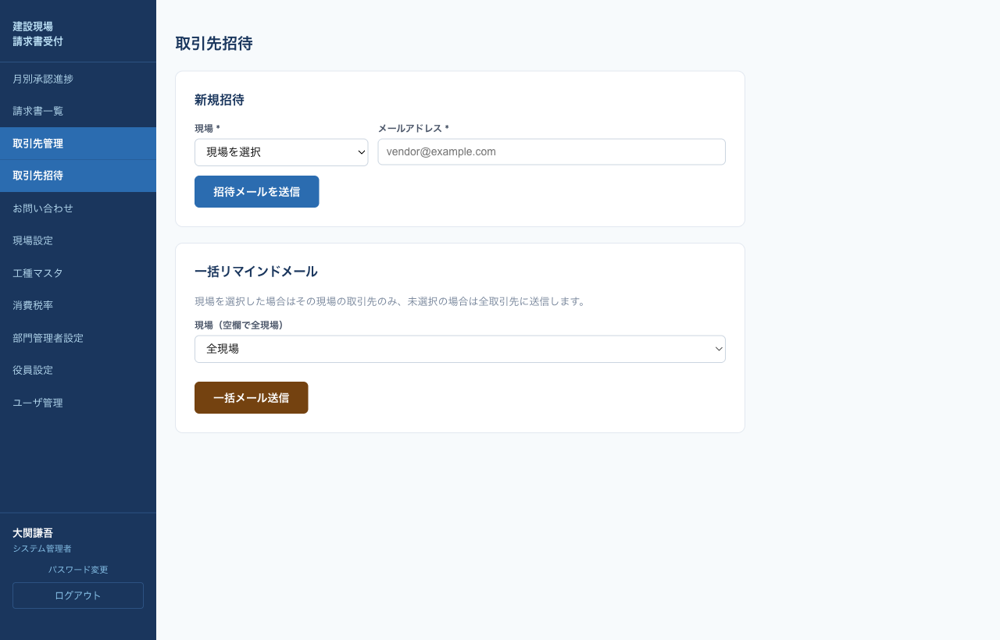
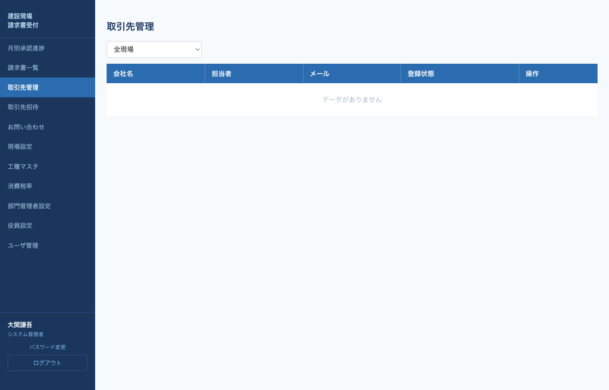
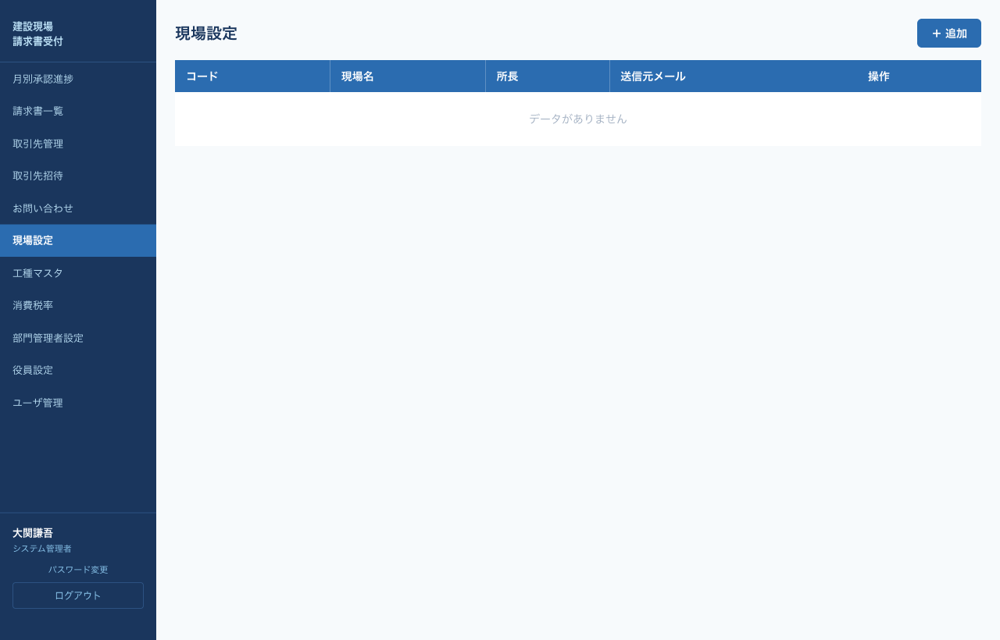
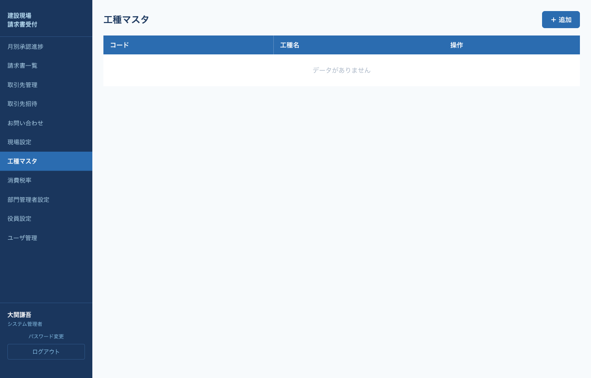
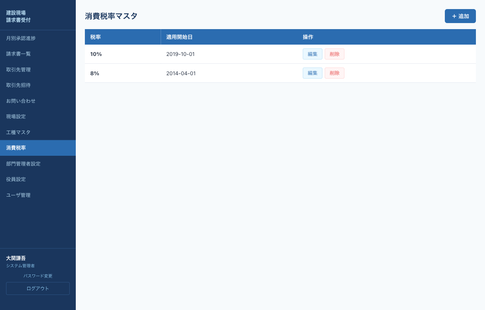
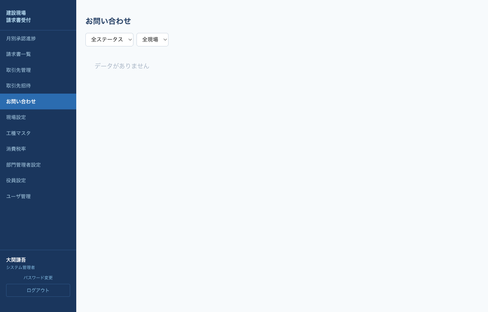

総務管理者の役割
総務管理者は日々のマスタ運用と取引先管理を担当します。承認フロー自体には介入しませんが、工種マスタ・現場マスタ・消費税率・取引先招待・お問い合わせ対応など、システムが正常に動くための運用全般を行います。
利用できるメニュー：月別承認進捗（閲覧）／請求書一覧／取引先管理／取引先招待／お問い合わせ／現場設定／工種マスタ／消費税率
取引先招待
新規取引先を招待するには、メールアドレスと現場を指定して招待メールを送信します。

左メニュー「取引先招待」をクリック。
「新規招待」セクションで 現場 を選択し、取引先の メールアドレス を入力。
招待メールを送信をクリック。取引先にはワンクリックでログインできるURLが送られます。
一括リマインドメール
月次の請求書提出を促すリマインドを送る機能です。「一括リマインドメール」セクションで、現場を選択（空欄で全現場）して一括メール送信をクリックします。
取引先管理
登録済みの取引先情報（会社名・口座・インボイス番号・担当者等）の確認と編集、招待の取消、個別リマインドメール送信ができます。

- 編集：会社情報・口座・インボイス番号などを修正
- メール：個別リマインドメール送信
- 招待取消：未登録の招待を取り消し
現場設定
現場（受注側会社）マスタの追加・編集・削除を行います。

| 項目 | 説明 |
|---|---|
| 現場コード * | 現場を識別するコード（例：C01） |
| 現場名 * | 取引先・所長向けに表示される現場名称 |
| 送信元メール | この現場からのメール送信元アドレス |
| 管理者通知メール | 承認完了時などに通知を受け取るアドレス |
| SPOフォルダURL | 請求書ファイルを保存するSharePointフォルダURL |
| 所長 | この現場を担当する所長（ロール3ユーザから選択） |
工種マスタ
所長が請求書の明細入力で使用する工種コードと工種名を管理します。

＋ 追加をクリック。
工種コード（例：01）と工種名（例：土工）を入力し追加。
既存工種は編集／削除で変更可能。
消費税率マスタ
税率（%）と適用開始日を設定します。将来の税率変更に備えて新しい率を追加登録できます。

＋ 追加をクリック。
税率（例：10）と適用開始日を入力し追加。
お問い合わせ対応
取引先から送信されたお問い合わせの閲覧とステータス管理を行います。

左メニュー「お問い合わせ」をクリック。ステータス・現場でフィルタ可能。
一覧の各行をクリックすると本文が展開されます。内容を確認し、必要に応じて取引先に個別連絡。
対応状況に応じてステータスを変更： 未対応 対応中 対応済
請求書一覧・CSV出力
左メニュー「請求書一覧」から全現場の請求書を閲覧できます。現場・対象月でフィルタし、CSVボタンで一覧をExcel用CSVとしてダウンロード可能です。経理・会計ソフトへの取込に利用できます。